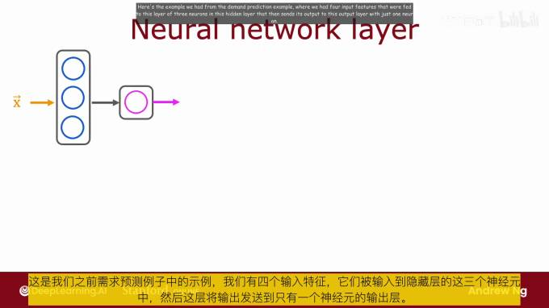
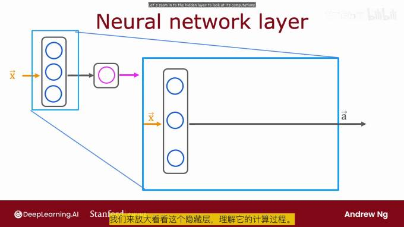
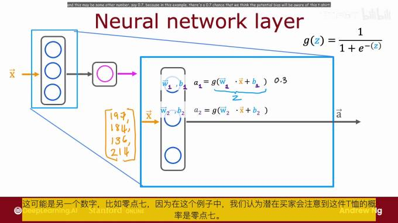
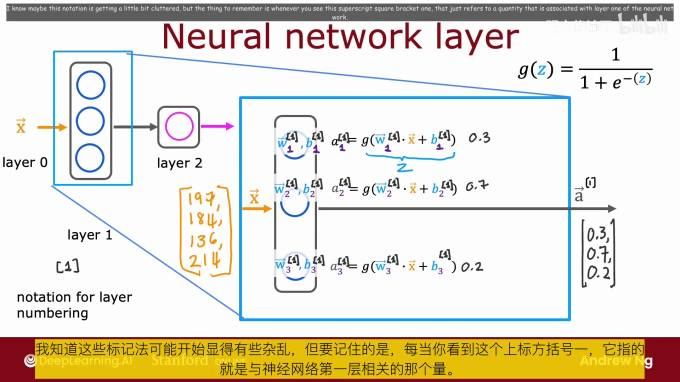
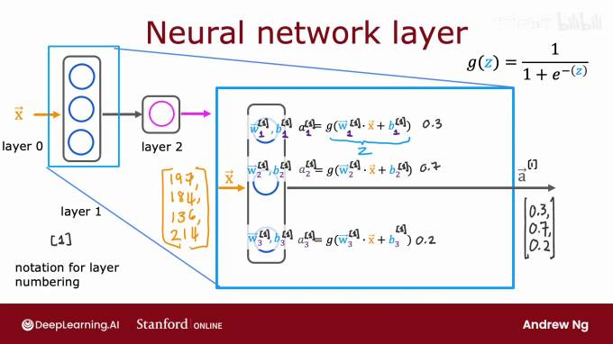
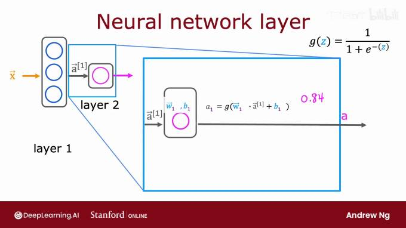
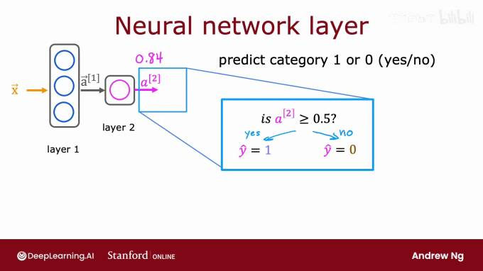

00:03大多数现代神经网络的基本构建块是一层神经元。
00:09在这个视频中，你将学习如何构建一层神经元。
00:14一旦你掌握了这一点，你就能用这些构建块将它们组合起来，形成一个大神经网络。
00:22我们来看看一层神经元是如何工作的。
00:26这是我们之前需求预测例子中的示例，我们有四个输入特征，它们被输入到隐藏层的这三个神经元中，然后这层将输出发送到只有一个神经元的输出层。

00:44我们来放大看看这个隐藏层，理解它的计算过程。

00:50这个隐藏层接收四个数字作为输入，这四个数字分别输入给这三个神经元中的每一个。
00:59而这三个神经元中的每一个，实际上都在实现一个小型逻辑回归单元，或者说一个小型逻辑回归函数。
01:10掌这弟一十神经九来说。
01:16实际上，为了表明这是第一个隐藏单元，我将把它标记为 w 一、b 一。
01:25它所做的是输出某个激活值 a，也就是 g 作用于 w 一与 x 的点积加上 b 一，这里的 z 值你在之前的课程中学习逻辑回归时已经很熟悉了。
01:46而 g(z)就是那个熟悉的逻辑函数，一除以一加 e 的负 z 次方。
01:56这样计算出来的数字或许是零点三，这就是第一个神经元的激活值 a。
02:04为了表示这是第一个神经元，我也会在这里加个下标 a 一。
02:10所以 a 一可能是零点三这样的数字，这意味着基于输入特征，它被认为是高负担性的概率是零点三。
02:20现在，我们来看第二个神经元。
02:23第二个神经元有参数 W 二和 b 二，这组 w 二、b 二是第二个逻辑单元的参数。
02:36它计算 a 二等于逻辑函数 g 作用于 w 二与 x 的点积加上 b 二，这可能是另一个数字，比如零点七，因为在这个例子中，我们认为潜在买家会注意到这件 T 恤的概率是零点七。

02:59类似地，第三个神经元有第三组参数 w 三、b 三，并同样计算出一个激活值 a 三，等于 g 作用于 w 三与 x 的点积加上 b 三，这个数值可能是零点二。
03:11等于 g 作用于 w 三与 x 的点积加上 b 三，这个数值可能是零点二。
03:18那么，在这个例子中，这三个神经元输出了零点三、零点七和零点二，而这三个数字组成的向量，就成了激活值向量 A，之后被传递给这个神经网络的最终输出层。
03:41现在，当你构建多层神经网络时，给不同的层进行编号会很有用。
03:48所以按照惯例，这层被称为神经网络的第一层，而这层被称为神经网络的第二层。
04:00输入层有时也叫做第零层。
04:05如今，有些神经网络可以有几十甚至几百层。
04:10但为了引入一套标记法，帮助我们区分不同层，我将使用上标方括号一，来索引不同的层。
04:25具体来说，我会用上标方括号一的 A，来标记这个神经网络隐藏层，也就是第一层的输出。
04:38同样地，这里的 W 一、b 一是神经网络第一层中第一个单元的参数。
04:46所以我也要在这里加上上标方括号一。
04:50而这里的 w 二、b 二是第一层中第二个隐藏单元，或者说第二个隐藏神经元的参数。
05:01因此，它的参数同样用上标方括号一来标记，像这样。
05:08类似地，我可以加上方括号上标，像这样，来表示这些是该神经网络第一层隐藏单元的激活值。
05:22我知道这些标记法可能开始显得有些杂乱，但要记住的是，每当你看到这个上标方括号一，它指的就是与神经网络第一层相关的那个量。


05:39如果你看到上标方括号二，它指的就是与神经网络第二层相关的量。
05:48以此类推，对于层数更多的神经网络，其他层也同理，包括第三层、第四层，等等。
05:57那么，这就是这个神经网络第一层的计算过程。
06:02它的输出就是这个激活向量 a，带上标方括号一。
06:09我要把它复制到这里，因为这个输出将成为第二层的输入。
06:18现在，我们来放大看看这个神经网络的第二层，也就是输出层的计算过程。

06:27输入给第二层的是第一层的输出。
06:32所以 A 一就是我们在这张幻灯片前半部分刚刚算出的那个向量：零点三、零点七、零点二。
06:45由于输出层只有一个神经元，它所做的一切就是计算 a 下标一，也就是它第一个且唯一一个神经元的输出，等于 g，即 S 型函数，作用于 w 下标一与 a 上标方括号一的点积。
07:06这是输入这一层的部分，然后加上 b 一。
07:12这里有你熟悉的乙量，而 g 和之前一样，是你应用到这个 Z 上的 S 型函数。
07:22如果这得到一个数字，比如说零点八四，那么这就成了神经网络这个输出层的输出。
07:32在这个例子中，因为输出层只有一个神经元，它的输出是一个标量，是一个单独的数字，而不是数字向量。N。
07:43沿用我们之前的标记惯例，我们将使用上标方括号二，来标记与神经网络第二层相关的量。
07:55所以 a 上标方括号二就是这层的输出。
08:01因此，我也要把它复制到这里，作为神经网络的最终输出。
08:07为了让标记一致，你也可以加上这些上标方括号二，来表示这些是和神经网络第二层相关的参数和激活值。

08:23一旦神经网络计算出 A 二，还有一个最终的、可供你选择是否实现的步骤，那就是如果你想要一个二元的预测，比如一或零，是不是畅销品，是或否，你可以取数字 a 上标方括号一下标-。
08:45这就是我们算出的零点八四这个数字，所以，如果它大于零点五，你就可以预测 y hat 等于一。
08:58如果它小于零点五，那么就预测 y hat 等于零。
09:03我们在专门化课程的第一门课中学习逻辑回归时，也见过这种阈值处理。
09:10所以，如果你愿意，这一步就能给你最终的预测 y hat，不是一就是零，如果你不只想得到一个概率。
09:19一个关于它是否是畅销品的概率。
09:23这就是神经网络的工作原理。
09:26每一层输入一个数字向量，对其应用一堆逻辑回归单元，然后计算出另一个数字向量，这个向量再一层层地传递下去，直到你得到最终输出层的计算结果，也就是神经网络的预测，你可以在此基础上选择是否用零点五作为阈值，来得出最终的预测。
09:51在此基础上，让我们继续前进，利用我们现在打下的基础，来看一些更复杂、规模更大的神经网络模型。
10:01我希望通过看到更多的例子，这种层的概念，以及如何将它们组合起来构建神经网络，会变得更加清晰。